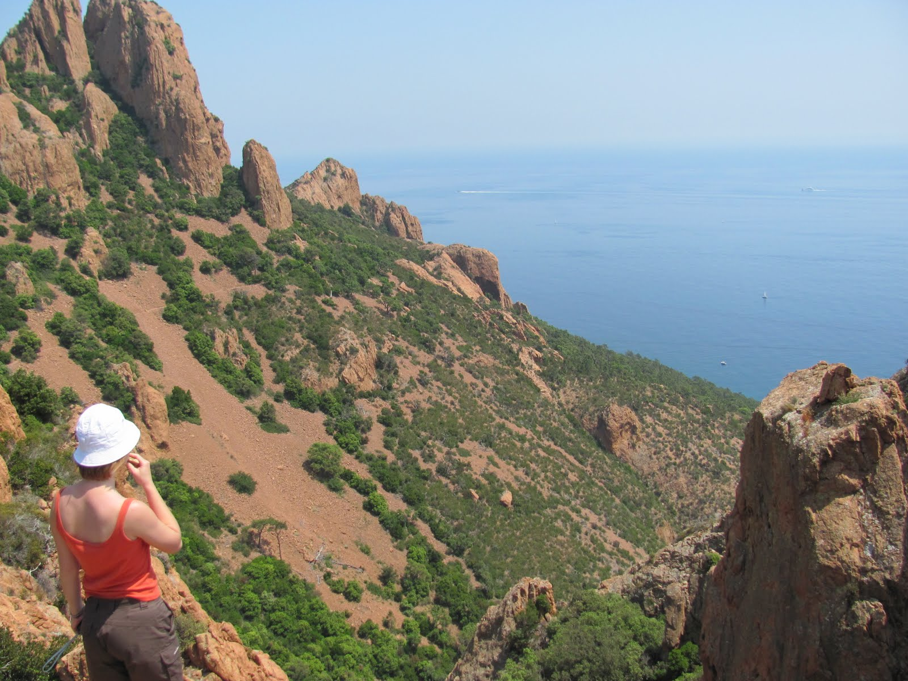
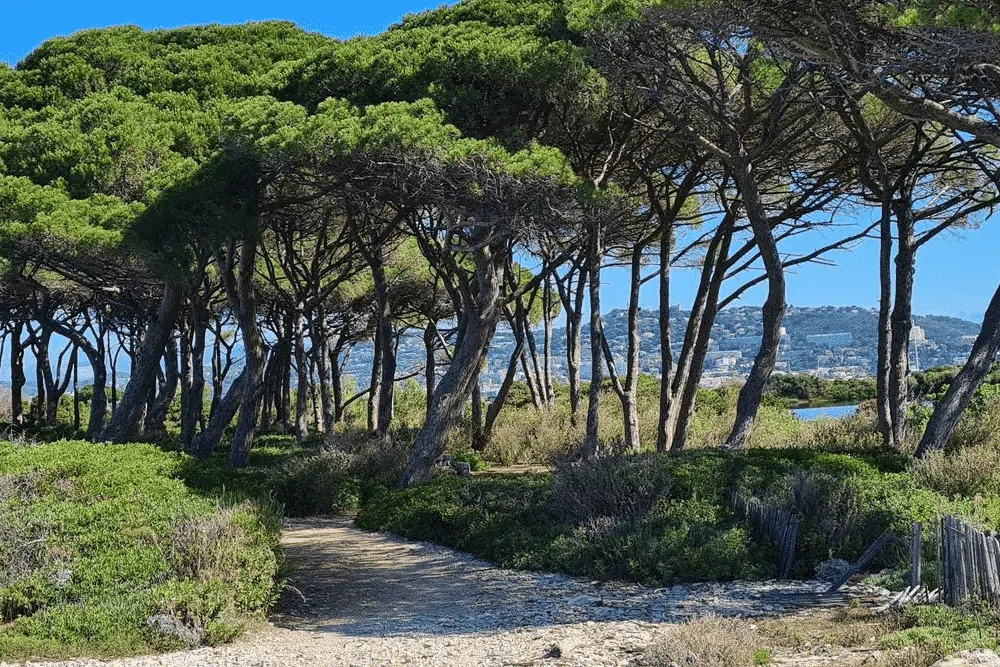

Les différentes randonnées
Vaste étendue de paysage ...
Ile sainte-Marguerite, au large de Cannes
Dans les Alpes-Maritimes, où les montagnes rencontrent la mer, Cannes jouit d'un site naturel absolument magnifique, avec sa grande baie, la Méditerranée, le massif de l'Esterel et bien d'autres ... Des randonnées accessibles à tous les niveaux que ce soit de la balade tranquille à la sortie plus corsée. La meilleure saison pour randonner à Cannes s'étend d'avril à juin, puis sur septembre-octobre du fait qu'il n'y est pas trop de monde et de touristes, et des températures idéales. N'oublions pas que nous sommes dans le sud de la France, il fait chaud en été, ce qui augmente le degré de difficulté des marches. En hiver, les belles journées ensoleillées offrent une clarté de l'air parfaite.
Excursion en mer ...
Comme vous le savez sûrement, nous pouvons trouver 2 grandes îles au large de la baie de Cannes nommées les îles de Lérins. Les Îles de Lérins sont un archipel français méditerranéen, situé dans le département des Alpes-Maritimes, sur la Côte d’Azur. L’archipel est composé de deux îles principales : l'île Sainte-Margurite situé au nord qui fait 2.1 km2 et l'île Saint-Honorat. La randonnée est très certainement un des plus simples et beaux moyens pour visiter les îles de Lérins ! En effet le tour de l'île Marguerite se fait facilement à pied, qui plus est avec un sublime décor méditerranéen et dépaysant ! Ne manquez pas non plus de visiter le sublime Fort Royal, autrefois résidence de l’Homme au masque de fer
- Durée : environ 1h40
- Distance : 7.2 km
- Dénivelé : 57 m
- Difficulté : facile
- à 15 minutes en bateau du port de Cannes
Nous retrouvons également l'île Saint-Honorat. Le tour de l'île , de petite dimension, six fois plus petite que sa grande sœur, ne pose aucun problème en termes de difficulté mais vaut bien le détour, avec des pointes rocheuses, des criques bleu profond, des odeurs de pin et vous pourrez également admirer, côté patrimoine, plusieurs chapelles, le fort Saint-Honorat et l'abbaye de Lérins. Elle est le lieu de vie d’une vingtaine de moines cisterciens. Ces derniers cultivent encore de nos jours, les vignes qui entourent la sublime abbaye où ils vivent. À l’extrême sud de l’île, perché sur un caillou, se trouve l’ancien monastère fortifié médiéval, fondé par le moine Honorat, autour de l’an 400.
- Durée : environ 1h
- Distance : 3.2 km
- Dénivelé : 71 m
- Diffculté : facile
- à 20 minutes en bateau du port de Cannes
Prenons de la hauteur ...
Un tour du parc de la Croix-des-Gardes sur les hauteurs de Cannes
Rendez-vous sur les hauteurs de la ville, à 10 minutes en voiture, à l’entrée du parc naturel forestier de la Croix-des-Gardes : la façon la plus facile de prendre l’air et de se dégourdir les jambes au cours d’un très bel itinéraire, offrant plusieurs points de vue comme au belvédère du Cèdre et à la Croix-des-Gardes elle-même. En bonus, les odeurs de mimosas embaument l’ensemble du parcours.
- Durée : environ 1h15
- Distance : 5 km
- Dénivelé : 96 m
- Difficulté : facile
Le col de Théoule-sur-Mer et ses panoramas
Rendez-vous au sud du golfe de la Napoule, à Théoule-sur-Mer (30 minutes en voiture). Laissez la voiture derrière vous pour emprunter un très beau sentier menant à la piste des Saoumes et au mémorial de Notre-Dame d’Afrique, avec en cours de marche plusieurs superbes panoramas : la Côte d’Azur, Cannes et les îles de Lérins, les Alpes… on en prend plein les yeux. Sans être ni trop long ni trop ardu, mieux vaut prévoir de bonnes chaussures pour marcher confortablement sur ces sentiers caillouteux, typiquement méditerranéens, accompagnés de délicieuses senteurs de pinèdes
- Durée : environ 2h
- Distance : 7.1 km
- Dénivelé : 267 m
- Difficulté : modérée